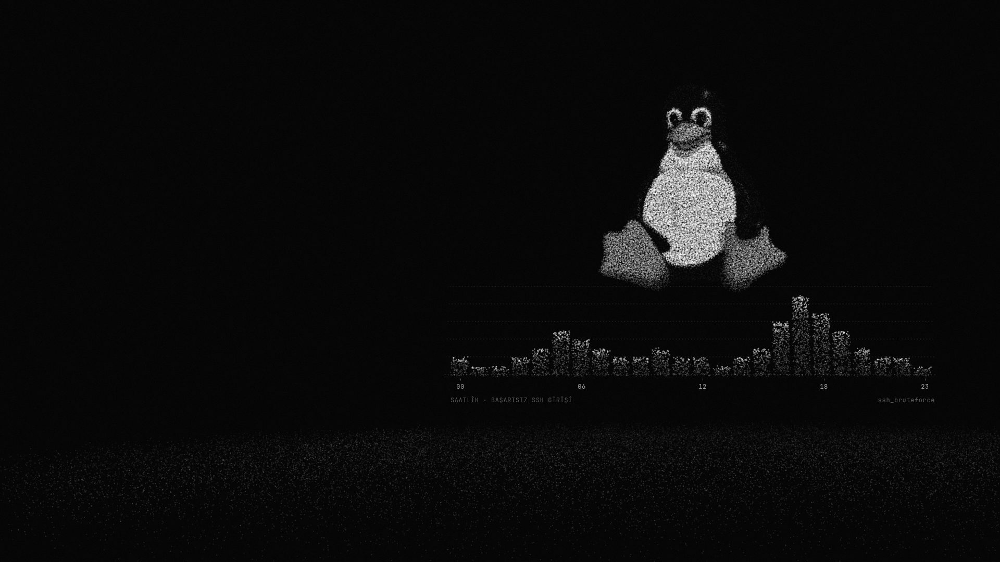

SSH brute-force tespiti
Başarısız giriş denemelerini pencere ve eşik mantığıyla sayar; varsayılan 5 deneme / 5 dakika.
Linux sunucular için güvenlik izleme
NexGuard, SSH oturum kayıtlarını izleyen hafif bir ajan ve bulguları canlı gösteren merkezi bir panelden oluşur. Brute-force denemesini tespit eder, saldırgan IP'yi otomatik engeller.
İlk sürüm 0.1.0 · .deb paketleri depoda
Nasıl çalışır
nexguard-agentd sunucuda çalışır; SSH kimlik doğrulama kayıtlarını (journald ya da /var/log/auth.log) okur.
Aynı IP'den 5 dakika içinde 5 başarısız giriş (varsayılan) olursa ssh_bruteforce bulgusu üretilir. Eşik ve süre ayarlanabilir.
Ajan IP'yi nftables ile, yoksa ufw ile engeller. Engel varsayılan olarak 1 saat sürer. Güvenlik duvarı yoksa hata kaydedilir, ajan çökmez.
nexguard-serverd bulguyu ve alınan aksiyonu kaydeder, WebSocket ile canlı panele iter.
Özellikler
Başarısız giriş denemelerini pencere ve eşik mantığıyla sayar; varsayılan 5 deneme / 5 dakika.
Tier A yanıtı: nftables, yoksa ufw ile engel. Süre (--block-ttl) varsayılan 1 saattir.
Bulgular ve aksiyonlar sayfayı yenilemeden, /api/v1/stream WebSocket'i üzerinden ekrana düşer.
Her aksiyon yerelde JSON Lines dosyasına (actions.jsonl) yazılır; başarısız olanlar nedeniyle birlikte.
Tek Go ikilisi, kendi servis hesabıyla systemd altında çalışır. Panel SQLite kullanır.
/api/v1/findings ve /api/v1/actions uçlarıyla bulgulara ve aksiyonlara betikten erişin.
Kurulum
Go gerektirir. Depoyu klonlayıp iki ikiliyi derleyin.
git clone https://github.com/m3lonxd/nexguard
cd nexguard
go build -o nexguard-serverd ./cmd/server
go build -o nexguard-agentd ./cmd/agent./nexguard-serverd --addr :8842 --db /tmp/nexguard-test.db./nexguard-agentd --enroll http://localhost:8842 --config /tmp/nexguard-agent.yaml./nexguard-agentd --config /tmp/nexguard-agent.yaml \
--audit-log /tmp/nexguard-actions.jsonl \
--threshold 5 --window 5mcurl -s http://localhost:8842/api/v1/findings | jq
curl -s http://localhost:8842/api/v1/actions | jqPanel: http://localhost:8842/. Test için --authlog ile sahte bir kayıt dosyası verebilirsiniz; ayrıntı için README'deki "Manual end-to-end test" bölümüne bakın.
Depoda packaging/ altında nexguard-agent ve nexguard-server için nfpm yapılandırması ve systemd birimleri var. Paketler kurulumda servisi otomatik başlatmaz; ajan, /etc/nexguard/agent.yaml oluşturulana (--enroll) dek çalışmaz.
nfpm package --config packaging/nfpm-agent.yaml --target dist/ --packager deb
nfpm package --config packaging/nfpm-server.yaml --target dist/ --packager debPOST /api/v1/enroll) şimdilik kimlik doğrulamasızdır. Paneli yalnızca güvenilir bir ağda çalıştırın; tek kullanımlık kod, mTLS ya da izin listesi planlanan işler arasındadır.
Yol haritası
Aşağıdakiler bugünkü sürümde bulunmuyor. Bilinçli olarak ilk dilimin dışında bırakıldı.

Yerelde kurun, sahte bir kayıt dosyasıyla brute-force simülasyonu çalıştırın ve panelde canlı izleyin.